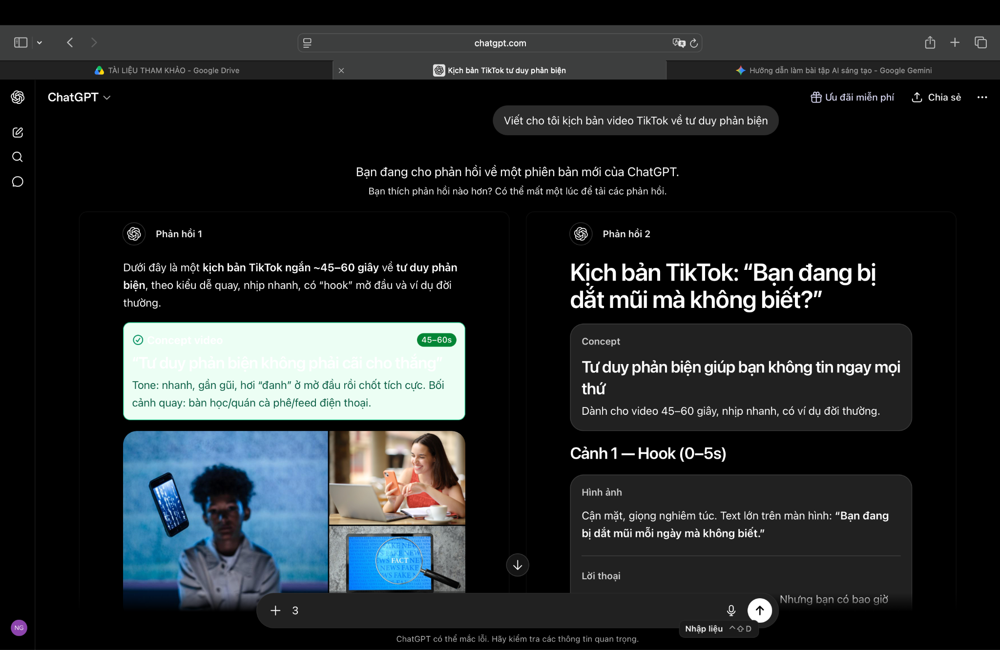
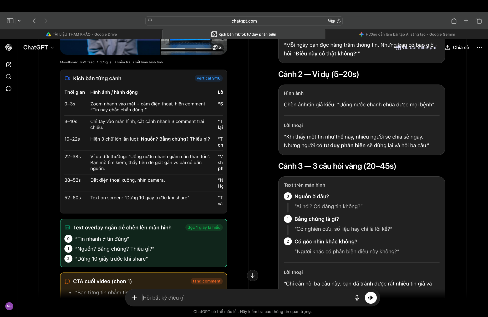
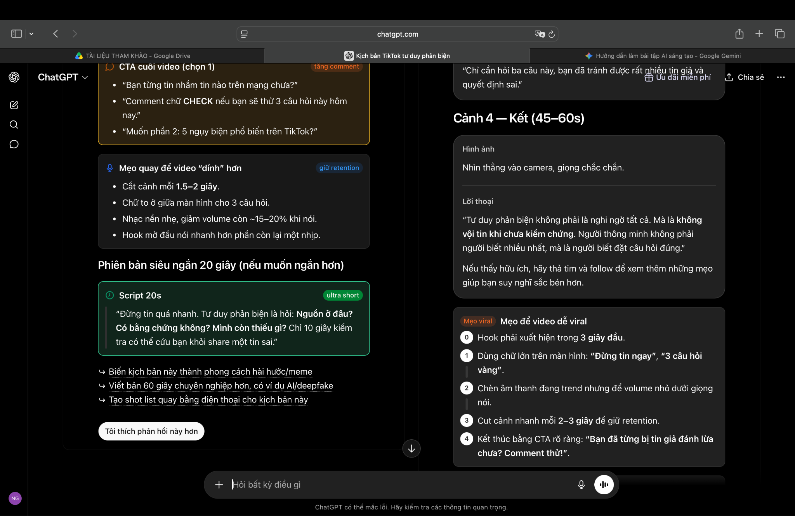
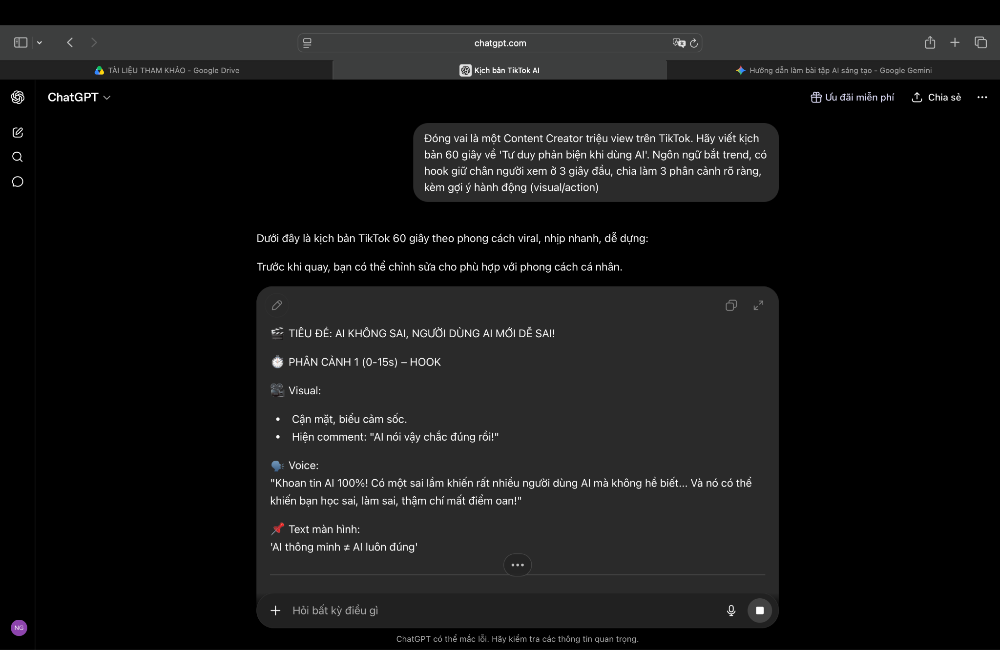
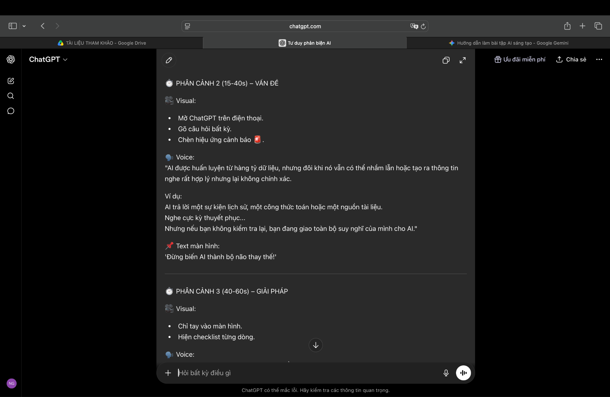

Bài 5: Sử dụng AI tạo sinh để hỗ trợ sáng tạo nội dung
Mục tiêu: Học cách phối hợp đa dạng các công cụ AI tạo sinh (Text AI, Image AI, Design AI) để sản xuất một sản phẩm truyền thông số hoàn chỉnh (video ngắn, kịch bản, storyboard) và đánh giá các vấn đề đạo đức đi kèm.
I. Giới thiệu dự án truyền thông
- Tên dự án: Chiến dịch video ngắn "Tư duy phản biện - Tấm khiên trong kỷ nguyên AI".
- Mục tiêu chiến dịch: Nâng cao nhận thức của thế hệ trẻ (Gen Z) về việc kiểm chứng thông tin và giữ vững tính chủ động khi khai thác các công cụ trí tuệ nhân tạo.
- Hình thức sản phẩm: Video ngắn thời lượng 60 giây, định dạng dọc (tỷ lệ 9:16) tối ưu cho TikTok/Reels.
- Các công cụ AI lựa chọn:
- Tạo kịch bản (Text AI): Google Gemini / ChatGPT để lên kịch bản, lời thoại.
- Tạo storyboard (Image AI): Midjourney để tạo các hình ảnh minh họa bối cảnh/concept.
- Hỗ trợ dựng phim (Design AI): Canva AI & Adobe Firefly để phối màu, sinh hiệu ứng và thiết kế bố cục.
II. Nhật ký Quá trình sử dụng AI & Prompt Engineering
Bước 1: Lên ý tưởng và Viết kịch bản (AI Văn bản)
🔴 Prompt lần 1 (Chưa tối ưu):
"Viết cho tôi kịch bản video TikTok về tư duy phản biện."
Nhận xét: Văn bản AI trả về quá dài, mang tính học thuật, ngôn từ khô khan và không phù hợp với nhịp điệu nhanh, thu hút của video ngắn.

ChatGPT phản hồi kịch bản học thuật quá dài

ChatGPT tiếp tục phân cảnh chi tiết nhưng thiếu chất "bắt trend"

Phần kết bài kịch bản thô ban đầu
🟢 Prompt lần 2 (Đã cải tiến):
"Đóng vai là một Content Creator triệu view trên TikTok. Hãy viết kịch bản 60 giây về 'Tư duy phản biện khi dùng AI'. Ngôn ngữ bắt trend, có hook giữ chân người xem ở 3 giây đầu, chia làm 3 phân cảnh rõ ràng, kèm gợi ý hành động (visual/action)."

Phân cảnh 1: Hook giữ chân người xem trong 3s đầu

Phân cảnh 2 & 3: Giải pháp và lời kêu gọi hành động (CTA)
Cách tích hợp của con người: AI viết rất tốt phần "hook", nhưng phần kết bị rập khuôn. Mình cần tự tay sửa lại lời thoại cuối để mang tính cá nhân hóa và kêu gọi hành động (CTA) tự nhiên hơn.
Bước 2: Tạo Concept Art / Storyboard (AI Hình ảnh)
Prompt sử dụng: /imagine prompt a cinematic shot of a young Vietnamese student looking at a holographic AI brain, neon lighting, cyberpunk style, hyper-detailed, aspect ratio 9:16 --ar 9:16
Cách tích hợp của con người: AI tạo ra bức ảnh rất đẹp nhưng đôi khi bị lỗi ngón tay hoặc chèn chữ rác. Mình cần dùng công cụ xóa vật thể của Canva hoặc Photoshop để "dọn dẹp" lại bức ảnh trước khi đưa vào video.
Bước 3: Thiết kế và Dựng Video (AI Thiết kế)
Cách áp dụng Canva AI / Adobe Firefly: Sử dụng tính năng "Magic Design" để tự động đồng bộ hóa màu sắc theo phong cách Cyberpunk, hoặc dùng Adobe Firefly để mở rộng khung hình (Generative Fill) từ 4:3 sang 9:16 cho khớp với định dạng video ngắn dọc.
III. Bảng So sánh và Đánh giá các Công cụ AI
| Tiêu chí |
AI Tạo văn bản (Gemini/ChatGPT) |
AI Tạo hình ảnh (Midjourney/DALL-E) |
AI Thiết kế (Canva/Firefly) |
| Điểm mạnh |
Tốc độ lên ý tưởng nhanh, cấu trúc kịch bản mạch lạc, đa dạng góc nhìn. |
Hình ảnh nghệ thuật, chất lượng cao, hiện thực hóa được các ý tưởng siêu thực. |
Tự động hóa các tác vụ lặp đi lặp lại (phối màu, cắt ảnh, đổi định dạng). |
| Điểm hạn chế |
Dễ bị rập khuôn, văn phong đôi khi bị "sáo rỗng" nếu prompt quá ngắn. |
Khó kiểm soát tính nhất quán của nhân vật qua các khung hình khác nhau. |
Đôi khi các template tự động nhìn hơi đại trà, thiếu đột phá. |
| Mức độ phụ thuộc |
40% (Cần con người biên tập lại 60% ngôn từ để có 'chất riêng'). |
70% (Dùng làm chất liệu thô, con người sắp xếp bố cục). |
50% (AI gợi ý layout, con người tinh chỉnh nhịp điệu video). |
IV. Phân tích Vai trò của AI trong Quy trình Sáng tạo
a. AI làm tốt điều gì và hạn chế:
- Làm tốt: AI đóng vai trò như một "Trợ lý động não" (Brainstorming partner) xuất sắc. Nó giúp vượt qua nỗi sợ "tờ giấy trắng", tiết kiệm tới 60% thời gian tìm kiếm tài liệu và thiết kế thô.
- Hạn chế: AI thiếu "Trải nghiệm sống" (Human experience). Nó không hiểu được cảm xúc sâu sắc, sự hài hước tinh tế hoặc các yếu tố văn hóa địa phương (ví dụ: các câu nói đùa thịnh hành của giới trẻ Việt Nam).
b. Sự thay đổi trong quy trình sáng tạo của bạn:
Quy trình truyền thống: Nghĩ ý tưởng → Viết kịch bản → Tìm nguồn ảnh/quay phim → Edit (Mất 2-3 ngày).
Quy trình cộng tác với AI: Đưa từ khóa → AI gợi ý kịch bản & hình ảnh → Con người chọn lọc, biên tập và thổi "hồn" vào sản phẩm (Mất 3-4 tiếng). Bạn chuyển từ vai trò "Người thợ tạo tác" (Creator) sang "Người tổng đạo diễn" (Director/Editor).
c. Các vấn đề đạo đức (Ethical Considerations):
- Bản quyền dữ liệu: Hình ảnh từ Midjourney được huấn luyện trên tác phẩm của các họa sĩ khác mà chưa có sự đồng thuận rõ ràng.
- Sự thiên vị (Bias) và Tin giả: AI văn bản đôi khi "bịa việc" (Hallucination). Nếu không kiểm chứng, sản phẩm số của bạn sẽ lan truyền thông tin sai lệch.
5. Kết luận: AI là một bệ phóng tuyệt vời, nhưng sự sáng tạo, trải nghiệm và gu thẩm mỹ của con người mới là thứ định hình nên giá trị cốt lõi của sản phẩm số.